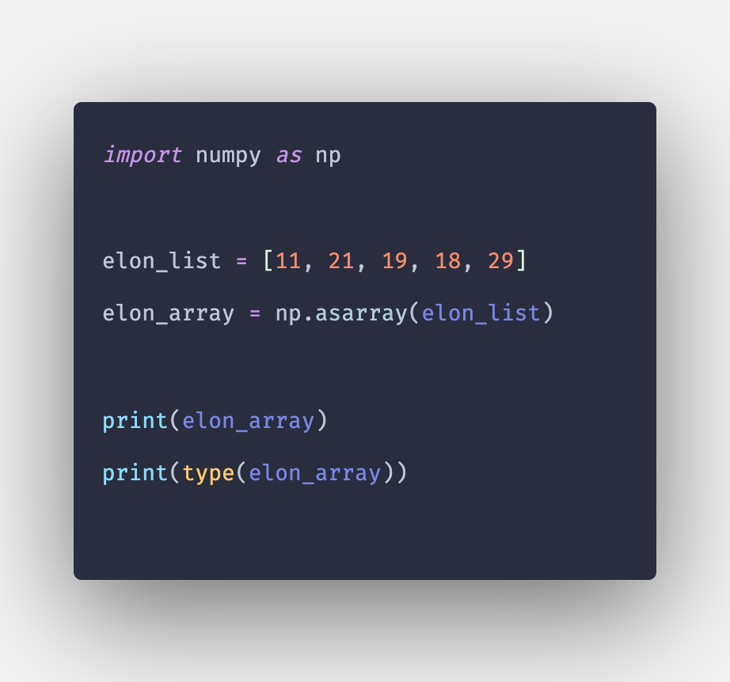

anaconda使用指令
anaconda使用指令
Git猴子
Visual Studio Code快捷鍵
顯示/讀取區
cv2.imread (BGR)讀取後使用PLT出GRAY一通道圖
Image.open
使用PLT讀取圖像並顯示
使用CV2讀取圖像並顯示
plt.hist 直方圖顯示
建立 list陣列
三維list陣列建立方式
二維轉一維
找出多維陣列內的最大最小值
list 陣列資料結構(非套件)
sorted()序列排序
資料型態轉換dtype
astype使用方式 uint8 uint16...
使用的話要注意使用前的陣列是list或是array，如不是array須先轉為array
list轉array方式 np.array或np.asarray

直方圖等化
TensorFlom區
TensorFlow官網
手寫數字辨識
作業三查詢網站
np.array
np.argmax
np.argmax 找陣列內最大值 回傳出最大值的位置，axis=1 找列最高值 ， axis=0 找行最高值
pandas區
pandas.crosstab() 表
os.path.join
os.path.join講解
依序加入路徑，如加入絕對路徑就將前面的路徑刪掉保留絕對路徑繼續往後加
os.path.join讀取主目錄下多個子資料的圖片
繪製模型架構圖
tf.keras.utils.plot_model(model, to_file='model.png')
下載graphviz 選擇加入到環境系統以及pip install pydot
下載以及pip的東西